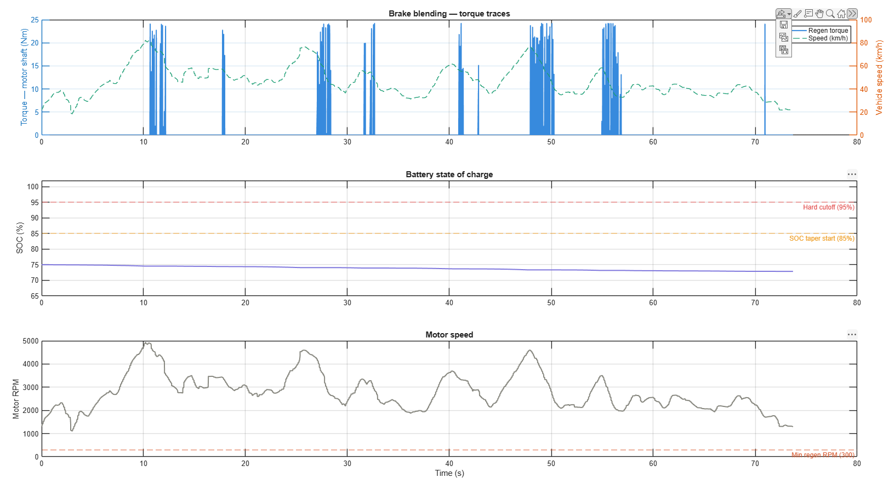
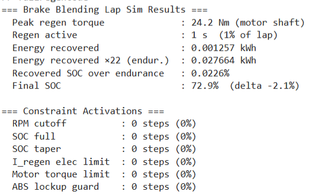

MATLAB Simulation
Developed a lap level brake blending simulation in MATLAB to model regenerative braking on CFR's electric race car, using real telemetry data exported from MoTeC. The sim ingests a logged lap CSV vehicle speed, applied motor torque, and brake line pressure and runs a time stepped model that computes how regen torque is blended with mechanical rear braking at each instant. Dynamic weight transfer is calculated each step to determine the true rear brake demand, and regen is then constrained by six layered limits: a minimum speed cutoff, SOC hard cutoff, SOC proportional taper above 85%, peak charge current, motor shaft torque limit, and an ABS lockup guard tied to dynamic rear axle load. SOC is updated bidirectionally charging during regen events, discharging during traction using a lookup table OCV model across the 88S4P pack. Outputs include peak regen torque, energy recovered per lap, projected endurance recovery, and per constraint activation statistics, alongside time series plots of torque, SOC, and motor RPM synchronized to the lap profile.


Show full MATLAB source
%% Full sim — Brake Blending + Regen
%% ── USER PARAMS ──────────────────────────────────────────────────────────
INIT_SOC = 75; % %
BRAKE_BIAS = 75; % % front
file_path = 'data/lap_log.csv'; % MoTeC-exported lap log
%% ── VEHICLE / MOTOR CONSTANTS ────────────────────────────────────────────
KT = 0.54; % Nm/A_rms
KV = 0.0319; % Vrms/rpm
GEAR = 4.6;
DTEFF = 0.724; % drivetrain efficiency
WHEEL_D = 0.4064; % m
CAR_MASS = 285; % kg (car + driver)
WB = 1.543; % m wheelbase
CG_H = 0.321; % m CG height
RPM2RAD = 2*pi/60;
KPH2RPM = 1000/(60*pi*WHEEL_D)*GEAR;
RPM2KPH = KPH2RPM^-1; % motor rpm -> km/h
MIN_RPM_REGEN = (5 * KPH2RPM); % limits regen to 5 kph
kph2ms = 0.277778;
%% ── BATTERY CONSTANTS ────────────────────────────────────────────────────
CELLS_S = 88;
CELLS_P = 4;
C_RATE = 4.4; % A/cell
I_MAX_REGEN = 13.2 * CELLS_P; % A pack
CAP_AH = 4.4 * CELLS_P; % Ah pack
MAX_MOTOR_T = 150; % Nm motor shaft
pack_nominal_voltage = CELLS_S * 3.6;
%% ── SOC-OCV TABLE ────────────────────────────────────────────────────────
SOC_TBL = [10, 20, 30, 40, 50, 60, 70, 80, 90, 100];
OCV_TBL = [3.178, 3.37, 3.52, 3.62, 3.75, 3.84, 3.94, 4.05, 4.09, 4.20];
%% ── BRAKE SYSTEM ─────────────────────────────────────────────────────────
PSI2PA = 6894.76;
FRONT_CAL_A = 0.00090792; % m^2
REAR_CAL_A = 0.00045239; % m^2
effective_rotor_Radius = 0.127; % meters
%% ── SIM PARAMETERS ───────────────────────────────────────────────────────
data = readtable(file_path);
N = height(data); % total rows in the table
%% ── PRE-ALLOCATE OUTPUTS ─────────────────────────────────────────────────
T_regen = zeros(1,N);
T_mech = zeros(1,N);
soc_vec = zeros(1,N);
rpm_vec = zeros(1,N);
timestamp = zeros(1,N);
motec_brakepres = zeros(1,N);
% constraint hit counters
cnt_rpm_cut = 0;
cnt_soc_full = 0;
cnt_soc_taper= 0;
cnt_elec_lim = 0;
cnt_motor_lim= 0;
cnt_abs_guard= 0;
soc = INIT_SOC;
mech_t_axle = 0;
%% ── LOAD REAL LAP DATA ───────────────────────────────────────────────────
[speed_kph, applied_motor_torque, timestamp, motec_brakepres, dt] = ...
gen_lap_profileMatlab(N, file_path);
t = (0:N-1)*dt; % time vector
%% ── SIM LOOP ─────────────────────────────────────────────────────────────
for i = 1:N
v_kph = speed_kph(i);
if i > 1
v_prev = speed_kph(i-1);
else
v_prev = v_kph;
end
decel_ = max(0, ((v_prev - v_kph)*kph2ms) / dt); % m/s^2
motor_rpm = v_kph * KPH2RPM;
omega = motor_rpm * RPM2RAD; % rad/s
pack_ocv = soc2ocv(soc, SOC_TBL, OCV_TBL, CELLS_S);
regen_t = 0;
mech_t_rotor = 0;
mech_t_axle = 0;
is_braking = (motec_brakepres(i) > 25) && (v_kph > 0.5);
if is_braking
%% Dynamic weight transfer
car_weight = CAR_MASS * 9.81;
wt = decel_ * CG_H * CAR_MASS / WB;
w_rear_static = car_weight * 0.5;
w_rear_dyn = w_rear_static - wt;
rear_pct = w_rear_dyn / car_weight;
total_brake_F = decel_ * CAR_MASS;
rear_brake_req_F = total_brake_F * rear_pct; % N at tire contact
%% Mechanical rear caliper contribution
% Derive rear line pressure from the rear brake-force share
front_brake_F = total_brake_F * (BRAKE_BIAS/100);
front_pres = front_brake_F / FRONT_CAL_A; % Pa
rear_pres = (total_brake_F * (1 - BRAKE_BIAS/100)) / REAR_CAL_A;
mech_t_axle = rear_pres * REAR_CAL_A * effective_rotor_Radius; % Nm at wheel
axel_T_req = rear_brake_req_F * (WHEEL_D/2); % Nm at wheel
mech_t_rotor = axel_T_req;
%% Regen fills the remaining rear-axle braking deficit
regen_deficit_axle = max(0, axel_T_req - mech_t_axle);
cRegen_T = (regen_deficit_axle / GEAR) / DTEFF; % Nm motor shaft
%% CONSTRAINT 1: RPM cutoff
if motor_rpm < MIN_RPM_REGEN
cRegen_T = 0;
cnt_rpm_cut = cnt_rpm_cut + 1;
end
%% CONSTRAINT 2: SOC full hard cutoff
if cRegen_T > 0 && soc >= 90
cRegen_T = 0;
cnt_soc_full = cnt_soc_full + 1;
end
%% CONSTRAINT 3 & 4: SOC taper + I_regen electrical limit
if cRegen_T > 0
i_lim = max_charge_amps(soc, I_MAX_REGEN, C_RATE, CELLS_P);
if soc > 80
cnt_soc_taper = cnt_soc_taper + 1;
end
p_lim = i_lim * pack_ocv; % W
t_elec_max = 0;
if omega > 0
t_elec_max = p_lim / omega; % Nm motor shaft
end
if t_elec_max < cRegen_T
cRegen_T = t_elec_max;
cnt_elec_lim = cnt_elec_lim + 1;
end
end
%% CONSTRAINT 5: Motor shaft torque limit
if cRegen_T > MAX_MOTOR_T && cRegen_T > 0
cRegen_T = MAX_MOTOR_T;
cnt_motor_lim = cnt_motor_lim + 1;
end
%% CONSTRAINT 6: ABS lockup guard (cap total rear torque below lockup)
lockup_rear_T = axel_T_req * 1.10;
current_total_T = mech_t_axle + (cRegen_T * GEAR * DTEFF);
if current_total_T > lockup_rear_T && cRegen_T > 0
cRegen_T = max(0, (lockup_rear_T - mech_t_rotor) / (GEAR * DTEFF));
cnt_abs_guard = cnt_abs_guard + 1;
end
regen_t = max(0, cRegen_T);
%% SOC update — braking: regen charges, motor draw negligible
regen_power = omega * regen_t; % W
if pack_ocv > 0
i_charge = regen_power / pack_ocv;
else
i_charge = 0;
end
d_soc = (i_charge * dt / 3600) / CAP_AH * 100;
soc = min(100, soc + d_soc);
else
%% SOC discharge during traction (motor draws from pack)
if v_kph > 0.5 && applied_motor_torque(i) > 0 && omega > 0
if pack_ocv > 0
i_discharge = (omega * applied_motor_torque(i)) / pack_ocv;
else
i_discharge = 0;
end
d_soc = -(i_discharge * dt / 3600) / CAP_AH * 100;
soc = max(0, soc + d_soc);
end
end
T_regen(i) = regen_t;
T_mech(i) = mech_t_axle / GEAR; % referred to motor shaft for comparison
soc_vec(i) = soc;
rpm_vec(i) = motor_rpm;
end
%% ── SUMMARY STATS ────────────────────────────────────────────────────────
peak_regen = max(T_regen);
active_steps = sum(T_regen > 0.1);
active_pct = active_steps / N * 100;
active_s = active_steps * dt;
energy_J = 0;
for i = 1:N
omega_i = rpm_vec(i) * RPM2RAD;
energy_J = energy_J + (T_regen(i) * omega_i * dt);
end
energy_kWh = energy_J / 3.6e6;
energy_kJ = energy_J / 1000;
energy_Ah = (energy_J / pack_nominal_voltage) / 3600;
final_soc = soc_vec(end);
delta_soc = final_soc - INIT_SOC;
fprintf('=== Brake Blending Lap Sim Results ===\n');
fprintf(' Peak regen torque : %.1f Nm (motor shaft)\n', peak_regen);
fprintf(' Regen active : %.0f s (%.0f%% of lap)\n', active_s, active_pct);
fprintf(' Energy recovered : %.6f kWh\n', energy_kWh);
fprintf(' Energy recovered ×22 (endur.) : %.6f kWh\n', energy_kWh*22);
fprintf(' Recovered SOC over endurance : %.4f%%\n', (energy_Ah/CAP_AH)*100);
fprintf(' Final SOC : %.1f%% (delta %.1f%%)\n', final_soc, delta_soc);
fprintf('\n=== Constraint Activations ===\n');
fprintf(' RPM cutoff : %d steps (%.0f%%)\n', cnt_rpm_cut, cnt_rpm_cut/N*100);
fprintf(' SOC full : %d steps (%.0f%%)\n', cnt_soc_full, cnt_soc_full/N*100);
fprintf(' SOC taper : %d steps (%.0f%%)\n', cnt_soc_taper, cnt_soc_taper/N*100);
fprintf(' I_regen elec limit : %d steps (%.0f%%)\n', cnt_elec_lim, cnt_elec_lim/N*100);
fprintf(' Motor torque limit : %d steps (%.0f%%)\n', cnt_motor_lim, cnt_motor_lim/N*100);
fprintf(' ABS lockup guard : %d steps (%.0f%%)\n', cnt_abs_guard, cnt_abs_guard/N*100);
%% ── PLOTS ────────────────────────────────────────────────────────────────
figure('Color','white','Position',[100 100 1100 700]);
% — Torque traces
ax1 = subplot(3,1,1);
yyaxis left
plot(t, T_regen, 'Color',[0.216 0.541 0.867], 'LineWidth',1.5); hold on;
ylabel('Torque — motor shaft (Nm)')
yyaxis right
plot(t, speed_kph, '--', 'Color',[0.114 0.620 0.459], 'LineWidth',1);
ylabel('Vehicle speed (km/h)')
legend('Regen torque','Speed (km/h)','Location','northeast','FontSize',9)
title('Brake blending — torque traces')
grid on; ax1.GridAlpha = 0.15;
% — SOC
ax2 = subplot(3,1,2);
plot(t, soc_vec, 'Color',[0.498 0.467 0.867], 'LineWidth',1.5); hold on;
yline(85, '--', 'SOC taper start (85%)', 'Color',[0.937 0.624 0.153], ...
'FontSize',9, 'LabelVerticalAlignment','bottom');
yline(95, '--', 'Hard cutoff (95%)', 'Color',[0.886 0.294 0.290], ...
'FontSize',9, 'LabelVerticalAlignment','bottom');
ylabel('SOC (%)')
ylim([max(0, INIT_SOC-10) 102])
title('Battery state of charge')
grid on; ax2.GridAlpha = 0.15;
% — Motor RPM
ax3 = subplot(3,1,3);
plot(t, rpm_vec, 'Color',[0.533 0.533 0.500], 'LineWidth',1.5); hold on;
yline(MIN_RPM_REGEN, '--', sprintf('Min regen RPM (%d)', round(MIN_RPM_REGEN)), ...
'Color',[0.847 0.353 0.188], 'FontSize',9, 'LabelVerticalAlignment','bottom');
ylabel('Motor RPM')
xlabel('Time (s)')
title('Motor speed')
grid on; ax3.GridAlpha = 0.15;
linkaxes([ax1 ax2 ax3], 'x');
%% ════════════════════════════════════════════════════════════════════════
%% LOCAL FUNCTIONS
%% ════════════════════════════════════════════════════════════════════════
function [speed, applied_torque, timestamp, motecpres, dt] = gen_lap_profileMatlab(N, file_path)
data = readtable(file_path);
raw_time = data{:,4};
raw_speed = data{:,3};
raw_torque = data{:,5};
raw_timestamp = data{:,1};
raw_motecPres = data{:,6};
raw_torque = max(raw_torque, 0);
% drop non-finite rows
valid = isfinite(raw_time) & isfinite(raw_speed) & isfinite(raw_torque) ...
& isfinite(raw_timestamp) & isfinite(raw_motecPres);
raw_time = raw_time(valid);
raw_speed = raw_speed(valid);
raw_torque = raw_torque(valid);
raw_timestamp = raw_timestamp(valid);
raw_motecPres = raw_motecPres(valid);
% remove duplicate timestamps
[raw_time, uid] = unique(raw_time);
raw_speed = raw_speed(uid);
raw_torque = raw_torque(uid);
raw_timestamp = raw_timestamp(uid);
raw_motecPres = raw_motecPres(uid);
lap_time = linspace(raw_time(1), raw_time(end), N);
speed = interp1(raw_time, raw_speed, lap_time, 'pchip');
applied_torque = interp1(raw_time, raw_torque, lap_time, 'pchip');
timestamp = interp1(raw_time, raw_timestamp, lap_time, 'pchip');
motecpres = interp1(raw_time, raw_motecPres, lap_time, 'pchip');
applied_torque = max(applied_torque, 0);
dt = (raw_time(end) - raw_time(1)) / (N - 1);
end
function ocv = soc2ocv(soc, soc_tbl, ocv_tbl, cells_s)
cell_ocv = interp1(soc_tbl, ocv_tbl, soc, 'linear', 'extrap');
ocv = cell_ocv * cells_s;
end
function soc = ocv2soc(pack_ocv, soc_tbl, ocv_tbl, cells_s)
cell_ocv = pack_ocv / cells_s;
soc = interp1(ocv_tbl, soc_tbl, cell_ocv, 'linear', 'extrap');
end
function amps = max_charge_amps(soc, i_max_regen, c_rate, cells_p)
if soc > 85
amps = i_max_regen * (1 - (soc - 85) / 15);
elseif soc < 10
amps = c_rate * cells_p;
else
amps = i_max_regen;
end
amps = max(0, amps);
endEmbedded C Implementation
Implemented the real time regen torque arbitration function running on CFR's rear vehicle controller (VCREAR) in embedded C. The function reads live longitudinal deceleration and rear brake line pressure over CAN, validates both signals before executing, then computes the optimal regen torque demand each control cycle. Dynamic weight transfer is calculated from the instantaneous deceleration, CG height, and wheelbase to determine how much braking force the rear axle is actually responsible for at that moment. The mechanical contribution of the rear caliper is then subtracted from that demand (converting brake pressure from PSI to pascals, multiplying through caliper area and rotor radius) and the remaining deficit is what regen must fill. The result is referred to the motor shaft through the gear ratio and returned for downstream torque limiting. If either CAN signal is stale or invalid, the function returns zero, ensuring the car fails safe with no unintended regen torque applied.
static float32_t evaluate_regenTorque(void)
{
float32_t decel;
const bool accel_valid = (CANRX_get_signal(VEH, VCPDU_lon, &decel) == CANRX_MESSAGE_VALID);
float32_t brakePressure_rear;
const bool brake_valid = (CANRX_get_signal(VEH, VCREAR_brakePressure, &brakePressure_rear) == CANRX_MESSAGE_VALID);
if (accel_valid && brake_valid)
{
float32_t weightTranfer = -(decel * CG_HEIGHT * CAR_MASS) / WHEEL_BASE;
float32_t dynamic_rearWeight = CAR_WEIGHT / 2 - weightTranfer; // assuming 50/50 weight front/rear
float32_t rearWeight_percentage = dynamic_rearWeight / (CAR_WEIGHT);
float32_t total_brakeForce = decel * CAR_MASS;
float32_t required_rearAxleForce = total_brakeForce * rearWeight_percentage;
float32_t required_rearAxleTorque = required_rearAxleForce * (WHEEL_DIAMETER / 2);
brakePressure_rear = brakePressure_rear * 6895; // converting PSI to PA
float32_t brake_torque = brakePressure_rear * REAR_CALIPER_AREA * EFFECTIVE_ROTOR_RADIUS;
float32_t regen_torque = required_rearAxleTorque - brake_torque;
regen_torque = regen_torque / GEAR_RATIO;
return regen_torque;
}
else
{
return 0;
}
}